Engineering tour · 6 November 2026
Welcome to OREZ.
A practical look at the desktop components we can run today, and a clear account of what remains.
Not an install-ready OS. Native container screens, SDDM test mode, a local document render and historical VM evidence are labeled individually. No screenshot certifies this PC, a completed installation, real Wi-Fi or phone mirroring.
Boot, passwords, internet, storage and Linux explained
# OREZ OS: first boot, everyday experience and evidence
Status: 6 November 2026. **Development components, not an install-ready release.**
The tour distinguishes actual native component tests, historical VM evidence,
planned behavior and blocked checks. No image in this tour proves physical-PC
compatibility. The 45 future ideas are in [EXPERIENCE_IDEAS.md](EXPERIENCE_IDEAS.md).
## What the finished installation should ask
1. The motherboard briefly shows its firmware logo. Select the separate OREZ
USB's UEFI entry from the one-time boot menu. OREZ cannot replace the board's
firmware splash simply through a desktop theme.
2. The intended media offers **Try OREZ**, **Install OREZ** and troubleshooting /
safe graphics. These are operating modes of one OREZ edition, not a selection
of Linux distributions. Current retained media still has upstream Kubuntu
boot labels; branding and the combined image require follow-up.
3. Try mode runs a temporary live session. Current owner-enrollment source asks
twice on the local console for a temporary 12–128-character password before
starting SDDM. This policy has isolated authentication tests, but the retained
old ISO predates it. Nothing should silently write to the internal SSD.
4. The intended installer asks language, keyboard, time zone, optional network,
the owner's name/password, and a **clearly identified disk and partition
plan**. Encryption and any dual-boot choice receive separate explanations.
Show all deletions/resizes before a final destructive-action confirmation.
The current OREZ installer launcher is deliberately blocked; this flow is
a requirement, not an implemented successful installation.
5. After installation and USB removal, the PC boots OREZ. If disk encryption is
enabled, expect an unlock prompt before the login screen unless a separately
qualified unlock design is chosen. Do not promise a single password prompt.
6. The OREZ login theme says **“Welcome home. Your workspace. Your control.”**
Choose the owner user and enter the local password. No Google or Microsoft
account is needed. A desktop-session selector, when present, selects an
installed desktop session, not another Linux distribution.
7. The approved paper-and-ink wallpaper, taskbar and launcher lead to the
desktop. A future first-run guide should offer display scaling, network,
phone pairing, backups, privacy controls and an optional tour. Skip/return
must be available. The current welcome component is a local HTML help page,
not a completed first-run wizard.
A password is created during the intended installation: OREZ does **not** wait
until later and leave the administrator unprotected. Root login stays locked.
Any future optional automatic desktop login must require deliberate owner
configuration and must not remove administrator authentication or encryption.
No vendor or AI receives an administrator identity.
**Account creation is separate from sign-in.** The installer/first setup must
create the selected local username and password before showing normal login.
Typing a new name/password into SDDM does not register an account; incorrect or
unknown credentials must be rejected without revealing unnecessary account
details. OREZ's visual design uses established Linux/PAM authentication rather
than a new online identity service. In the tour's test-mode screenshot, “No
desktop session found” concerns available session startup, not online account
registration. The full create-account → authenticate → start-desktop sequence
remains a release gate.
## Internet and disk space
Offline core installation is a release requirement, **not yet a passed test**.
The final image must contain its core desktop, installer, recovery essentials
and approved preinstalled applications. A qualified offline NVIDIA driver path
is still required. Network is needed for YouTube, new downloads, updates and
cloud AI; local files, native games already installed, Calendar and Reuz should
work offline. Wi-Fi setup should be skippable and recoverable in Settings.
| Item | Measured or estimated size | Meaning |
| --- | --- | --- |
| Retained old development ISO | 5,073,338,368 bytes, about 5.07 GB / 4.72 GiB | Measured; old owner policy; **do not install/distribute** |
| Separate native-app SquashFS | 383,488,000 bytes, about 383.5 MB | Measured; not integrated into a new full ISO |
| Finished installation | Provisional 25–35 GB engineering budget | **Estimate only** until an actual clean install is measured; not a minimum-size certification |
| Comfortable system allocation | Plan around 80–100 GB if existing data/layout permits | Recommendation allowing updates and apps; games, models, swap and backup/snapshot retention may need much more |
| Installation USB | Separate 16 GB or larger drive recommended | Planning allowance, not permission to erase any drive; preserve the Windows recovery USB |
ISO compression, installed files and free-space reserve are different quantities.
The two measured artifacts must not be added and called the installed size.
The 500 GB SSD has about 466 GiB total capacity before existing partitions. No
allocation is chosen until its actual layout and backup status are reviewed.
## What makes it OREZ, and what it inherits
OREZ remains a Linux distribution. Linux supplies the kernel, process/memory
management, filesystems, driver framework and networking. Kubuntu/Ubuntu add
packages and maintenance infrastructure; KDE provides mature windows, desktop,
Dolphin, Settings and device integration. This is a strong foundation for a real
PC, but it does not finish OREZ's installer, permissions, update/recovery design,
NVIDIA/Secure Boot integration, phone workflow or target-hardware qualification.
Linux is software, not an outside administrator. It does not independently take
ownership of the PC. The kernel necessarily has control over hardware; trusted
system services, drivers and authorized package installation may run with root
privileges. Their bugs or compromise remain risks. OREZ must review dependencies,
verify updates, minimize services and preserve owner-controlled permissions.
“No vendor admin account” is different from “no upstream code is trusted.”
Public repository reading/forking does not grant write access or PC control.
The separate collaborator/access audit remains incomplete.
The personality is calm Japanese ink and handmade paper, restrained glass,
readable typography, deliberate motion, clear status and visible owner control.
The two owner-supplied wallpapers and Paper/Ink palettes exist now. The current
native tour still shows familiar KDE icons and layouts; an entirely original,
polished shell is not claimed. Effects should have accessible solid/reduced-
motion modes. The five new theme proposals are not implemented palettes.
| Experience | Familiar capability | OREZ distinction / remaining work |
| --- | --- | --- |
| Desktop | Windows, taskbar, launcher, search, multiple workspaces | OREZ art/palettes and own apps; broader shell polish remains |
| File manager | Folders, drives, copy, rename, trash, search | Dolphin also offers tabs/split views; physical USB/MTP still needs testing |
| Applications | Native installers/packages and optional stores | OREZ Store is a visible catalog/launcher with compatibility gates, not the exclusive installation route |
| Calendar/time | Local events, clocks, timers, stopwatch | Original OREZ Calendar and Reuz components; no mandatory cloud account |
| Video | Native VLC, playback controls and fullscreen | Local generated-video controls tested; NVIDIA decode, real speakers and online streaming unqualified |
| Games | Native Linux games; optional Steam/Proton later | SuperTux test only; anti-cheat/Windows/Android compatibility is per game |
| Phone | KDE Connect, Bluetooth, network/tethering tools | Unified consent/permissions direction; real phone transfers and mirroring still pending |
| AI/security | Ordinary permissions, authentication and updates | OREZ AI is disabled; no autonomous detection or privileged AI agent is installed |
| Recovery | Upstream recovery building blocks | OREZ signed releases, installer recovery and rollback must still be implemented/qualified |
Some Windows applications will require alternatives, Wine/Proton or a licensed
VM; compatibility is not universal. The native applications retain their own
interfaces. A lightweight desktop cannot guarantee no lag, buffering, hangs,
thermal throttling or crashes. Measure frame times, memory pressure, power and
recovery on the actual Ryzen/RTX machine before making performance comparisons.
6 GiB remains an unqualified target profile; the real computer has 16 GiB.
## Fullscreen and privacy
VLC normally supports fullscreen with F; games have their own display settings.
The current tour tests VLC's actual fullscreen state and SuperTux's actual
1440×900 window. Software-rendered container results are not GPU benchmarks.
Online buffering depends on network, service/CDN and codec/driver behavior.
Brave is a native Linux application, but its sandbox cannot start in this
workspace's restricted nested namespaces. That is recorded as **blocked**;
no sandbox was disabled to manufacture a browsing pass. YouTube playback is
therefore also unverified here. The owner now treats YouTube as optional for the first PC release and prefers
phone mirroring when useful. Use official native Linux Brave. scrcpy mirroring
requires explicit Android debugging authorization and a connected phone; KDE
Connect alone does not provide the phone screen. Phone audio/DRM behavior and
actual mirroring remain unverified. Consumer Android/Play Store and automatic game presets are deferred.
No APK downloads, Google login, real purchases or financial accounts are tested.
## Tour evidence rules
The downloadable tour provides a screen and a scope label for every included
stop. Actual native UI screenshots are separate from test-report screenshots.
A historical GRUB screen is explicitly dated and tied to the old unsafe ISO.
The installer stop shows the real safety blocker. The login stop is SDDM test
mode with no usable desktop session in this environment, not successful login.
Unimplemented features cannot honestly have a working screenshot or practical
pass. Their design, acceptance tests and blockers are documented instead. A
comprehensive component tour is not a claim to have tested every OS capability,
a completed install, target-PC hardware, power-loss recovery or malware immunity.
The practical tour
Historical VM — not a new boot test
1. The current boot menu
Historical 5 November VM capture of the retained old development ISO. Kubuntu labels remain; this image predates owner hardening and must not be installed. A final OREZ boot menu is still required.
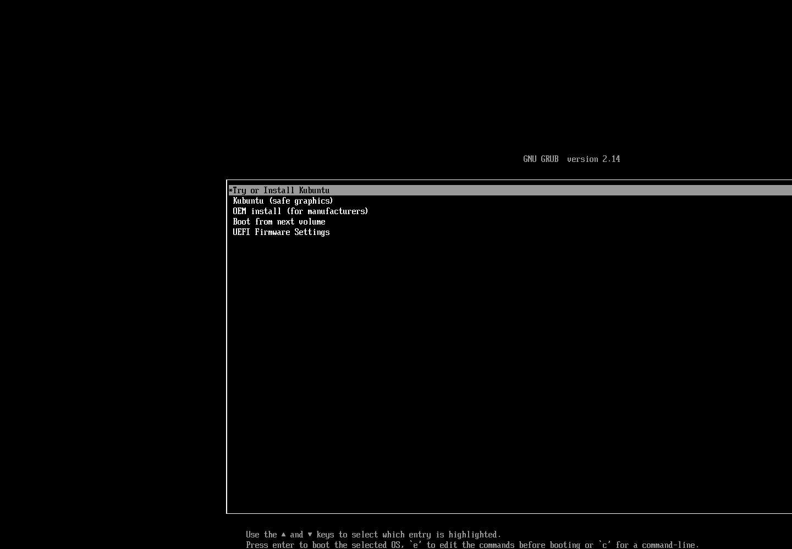
qa5-13-orez-uefi-sdl/host-window-0030.pngNative component — isolated container
2. Installation is currently blocked
The actual live-media guard displays why installation is unavailable and exits 78. No installer or disk write was performed.
qa10-15-components/native-details/04-installer-current-safety-block.pngActual SDDM test mode
3. Welcome home: login theme
Actual SDDM theme test mode. The environment has no usable desktop session, so sign-in is unavailable. This is not a successful boot or authentication test.
qa10-15-components/native-details/01-login-test-mode.pngActual SDDM test mode
4. Password field
Dummy text is masked in the real login field. The completed installer must create your local owner password; no Google or Microsoft login is required.
qa10-15-components/native-details/03-login-password-masked.pngActual local document — browser render
5. Current welcome document
The shipped local help document rendered in host Chromium from its source, at desktop and phone widths. Native Brave/file-URL launch is not tested by this render. A first-run setup wizard remains planned.
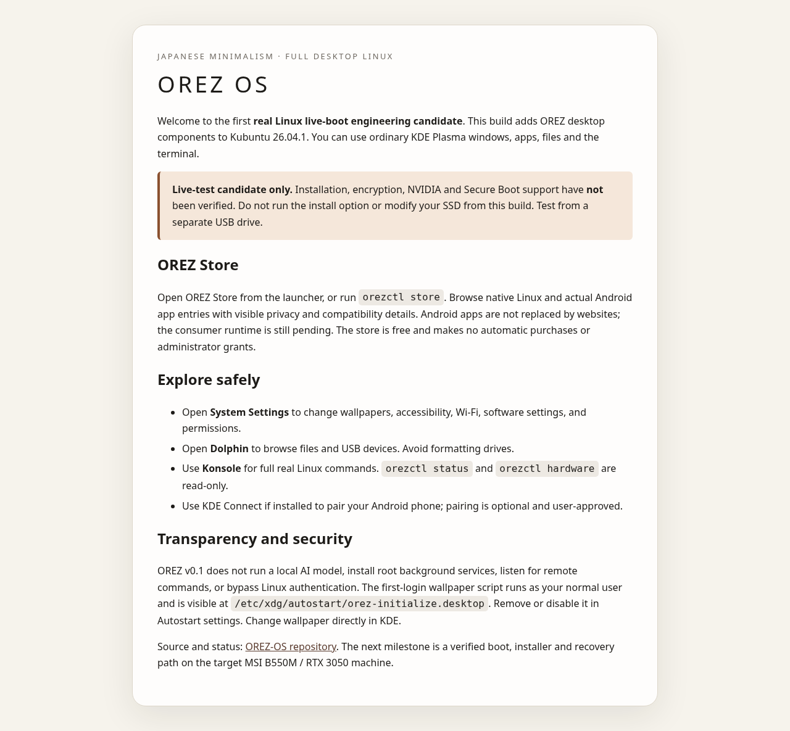
qa10-14-welcome-document/welcome-document-desktop.pngNative component — isolated container
6. Your desktop
Actual nested Plasma desktop with the approved Rest wallpaper. The test account retains its demo palette. KDE taskbar/icons are still visible; this is not the final polished shell or a booted ISO.
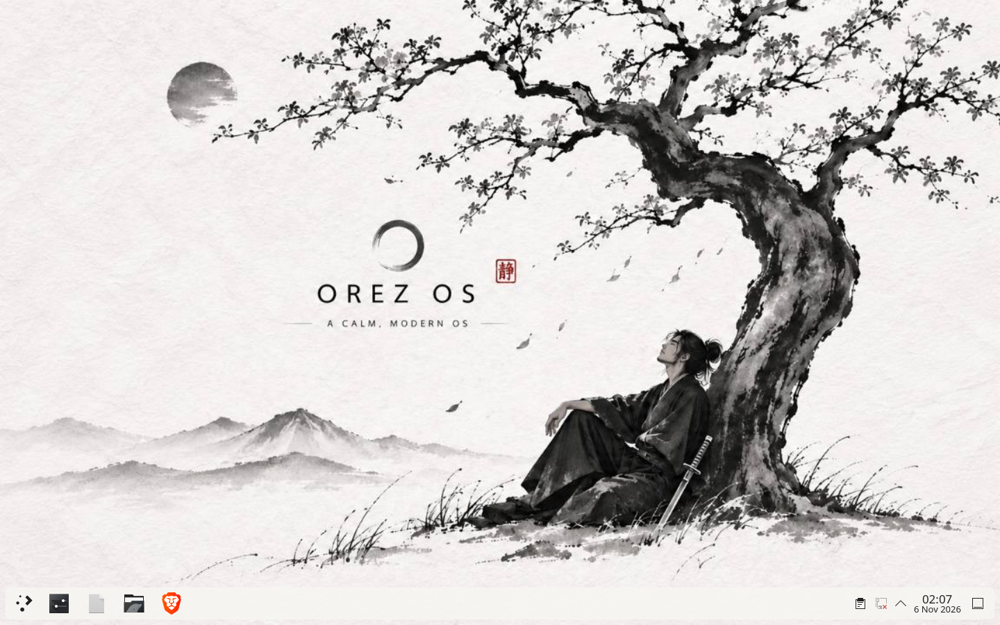
qa10-16-desktop/native-details/01-desktop-current-default.pngNative component — isolated container
7. Find OREZ applications
Actual launcher search shows Store, Connect, Settings, Calendar, hardware tools and Welcome. Android entries exist but their consumer runtime remains deferred.
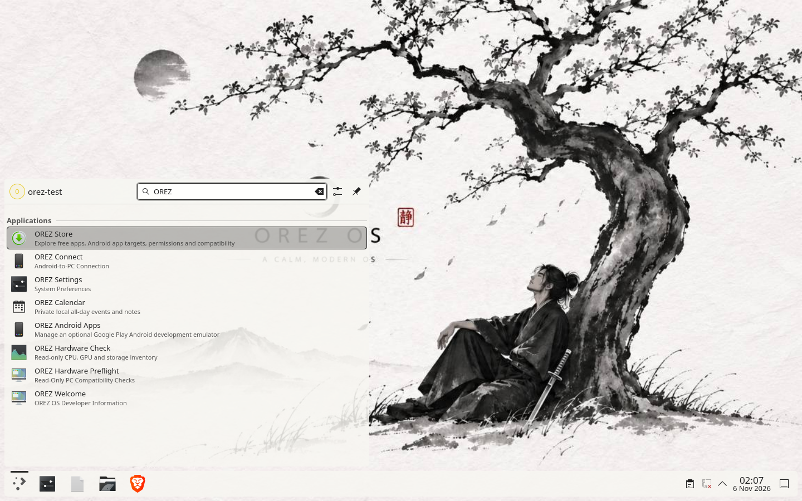
qa10-16-desktop/native-details/05-launcher-orez-search.pngNative component — isolated container
8. Searchable Settings
Typed Bluetooth into native Settings; matching results appeared. Clearing the query and closing Settings also passed.
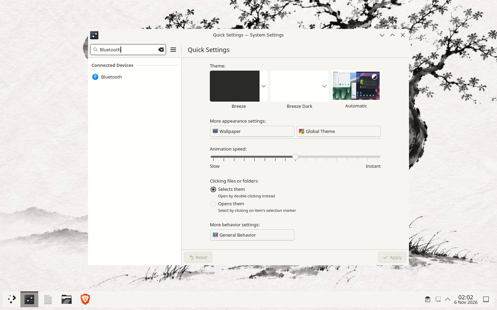
qa10-09-connectivity/native-details/03-settings-search-results.pngNative component — isolated container
9. Network settings
Native NetworkManager settings open and close. This offline container has no physical Wi-Fi radio; no connection or hotspot claim.
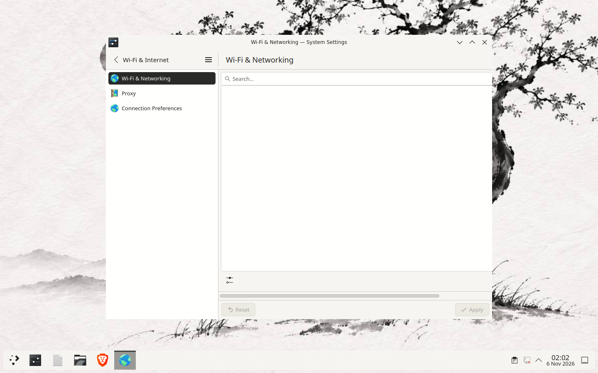
qa10-09-connectivity/native-details/01-network-open.pngNative component — isolated container
10. Wi-Fi password controls
A dummy wireless credential was masked, revealed, remasked, cleared and cancelled. No connection was saved. This does not test actual Wi-Fi authentication.
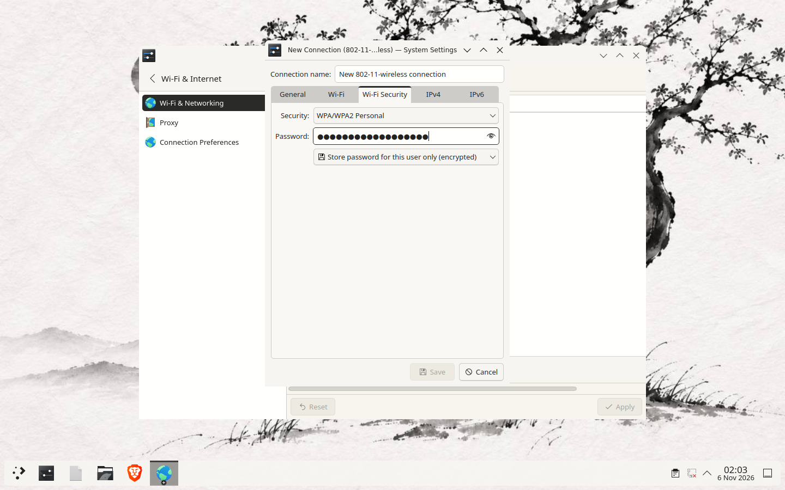
qa10-09-connectivity/native-details/06-dummy-password-masked.pngNative component — isolated container
11. Bluetooth settings
The actual page correctly reports no Bluetooth adapter in the container. Target-PC pairing, audio and file transfer are pending.
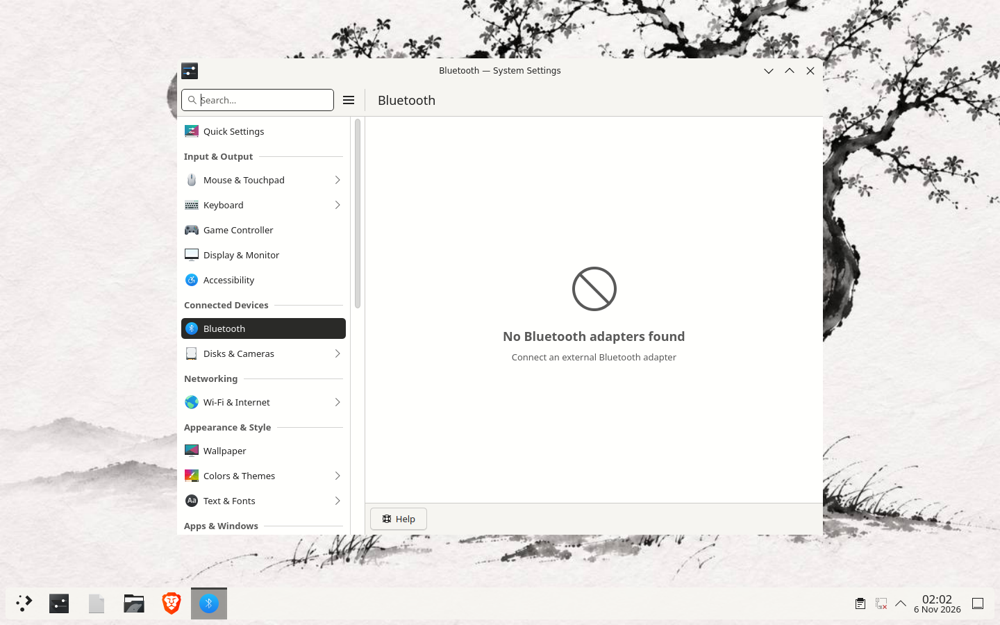
qa10-09-connectivity/native-details/02-bluetooth-open.pngNative component — isolated container
12. Phone connection
Real KDE Connect window, no paired phone. KDE Connect handles transfers/control; scrcpy provides separate consented screen mirroring. No Realme mirroring session was fabricated.
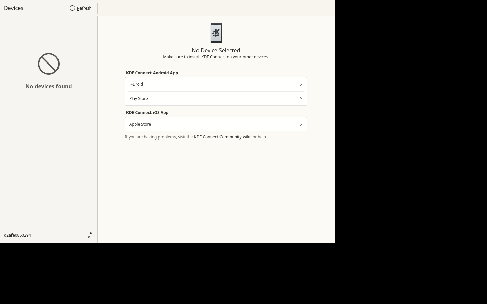
qa10-15-components/native-details/05-phone-connect-no-devices.pngNative component — isolated container
13. File operations
A disposable text file was copied, renamed, moved to Trash and restored with Undo through the real Dolphin UI. The original and restored bytes matched. No user data or physical drive was touched.
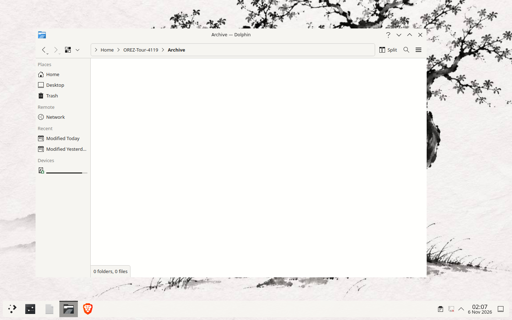
qa10-16-desktop/native-details/10-file-undo.pngNative component — isolated container
14. Tabs and split view
Real Dolphin tabs and two panes, showing the restored renamed file. Split/tabs visually confirmed; nested function-key automation was replaced with actual menu/button input.
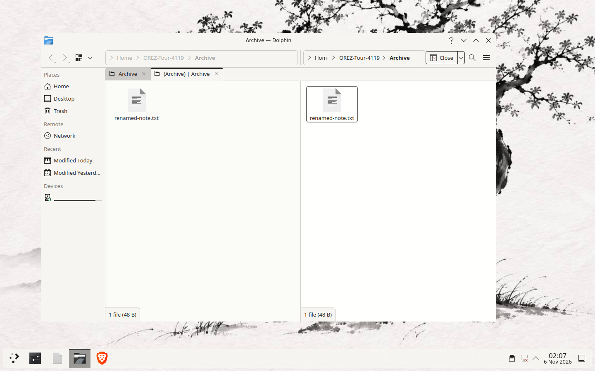
qa10-16-desktop/native-details/11-dolphin-tabs-split.pngNative component — isolated container
15. OREZ Store
The native Store detects installed Brave, VLC and SuperTux. VLC launched from its button. Android app entries are explicitly pending, not functional Play Store downloads.
 qa10-06-native-apps/native-details/store/14-my-apps.png
qa10-06-native-apps/native-details/store/14-my-apps.pngNative component — isolated container
16. OREZ Calendar
Actual local event creation/editing, SQLite persistence, ICS export and cancellable deletion passed. No cloud account or remote request.
 qa10-06-native-apps/native-details/daily-apps/01-calendar-saved.png
qa10-06-native-apps/native-details/daily-apps/01-calendar-saved.pngNative component — isolated container
17. Reuz clock
Native timezone and 12/24-hour preferences saved without changing the system clock. This is the current OREZ Reuz component, not a claim about another repository release.
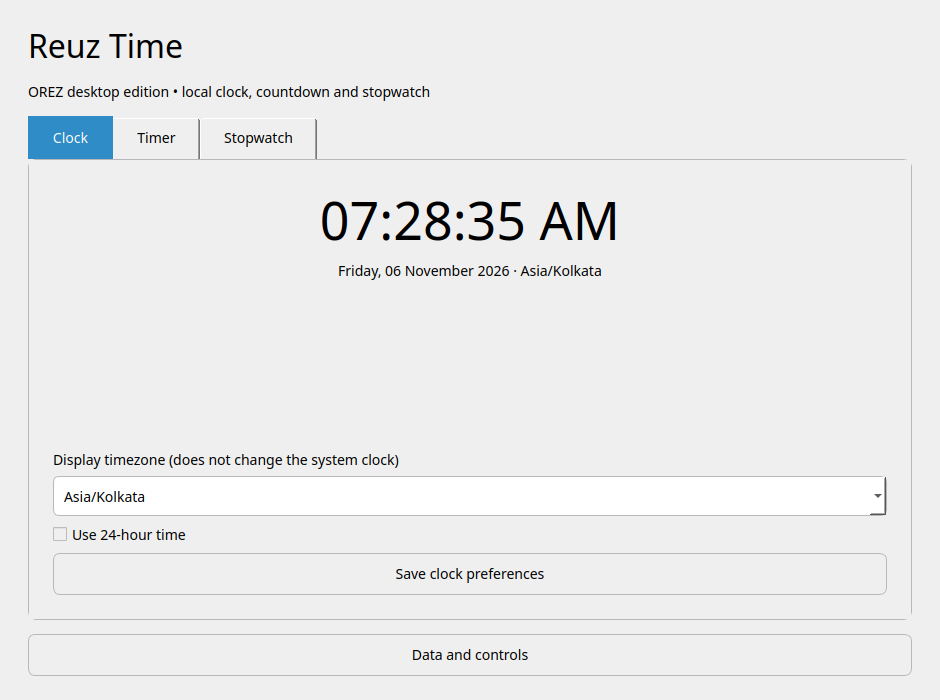
qa10-06-native-apps/native-details/daily-apps/08-reuz-preferences.pngNative component — isolated container
18. Reuz countdown
Start, pause, resume and completion passed. It is an application timer; suspended-PC wake and physical alarm audio are not verified.
 qa10-06-native-apps/native-details/daily-apps/09-reuz-paused-timer.png
qa10-06-native-apps/native-details/daily-apps/09-reuz-paused-timer.pngNative component — isolated container
19. Reuz stopwatch
Start/pause, lap and reset passed. Closing active work asks for confirmation and cancellation keeps the app open.
 qa10-06-native-apps/native-details/daily-apps/11-reuz-stopwatch-lap.png
qa10-06-native-apps/native-details/daily-apps/11-reuz-stopwatch-lap.pngNative component — isolated container
20. OREZ Ink palette
Real Reuz rendering with the packaged Ink palette. Both Paper and Ink were applied; the five proposed future themes are not implemented.
 qa10-06-native-apps/native-details/daily-apps/13-reuz-OREZInk.png
qa10-06-native-apps/native-details/daily-apps/13-reuz-OREZInk.pngNative component — isolated container
21. Horizon wallpaper
Your second supplied wallpaper applied in the real desktop, then restored to Rest. A wallpaper change is not a new OS edition.
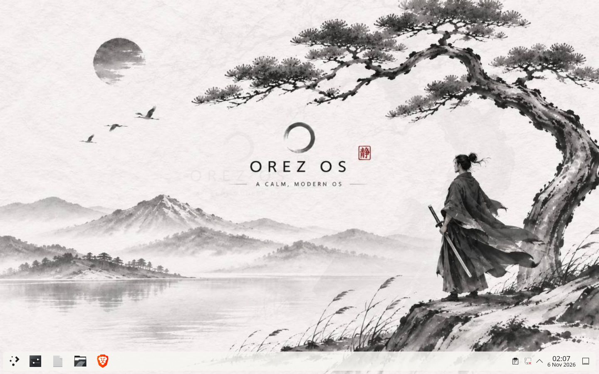
qa10-16-desktop/native-details/03-desktop-horizon.pngNative component — isolated container
22. Fullscreen VLC
Generated local video played. Actual Space pause/resume, mouse menu, F fullscreen on/off and Ctrl+Q passed. GPU decoding, physical audio and streaming were not tested.
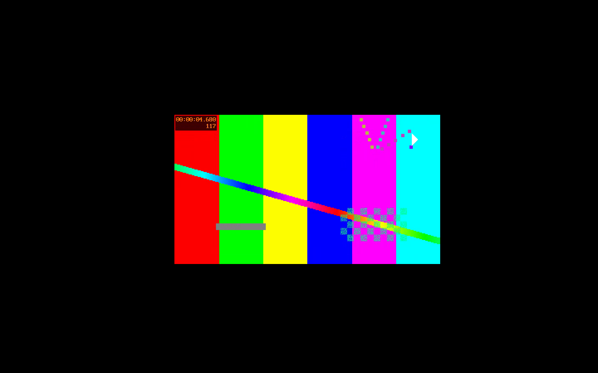
qa10-06-native-apps/native-details/input/04-vlc-default-f-fullscreen.pngNative component — isolated container
23. Fullscreen native game
SuperTux rendered at 1440×900. Captures show the player moving from x≈96 to x≈482 after Right input. This is software rendering, not an RTX benchmark, Android emulation or universal game compatibility.
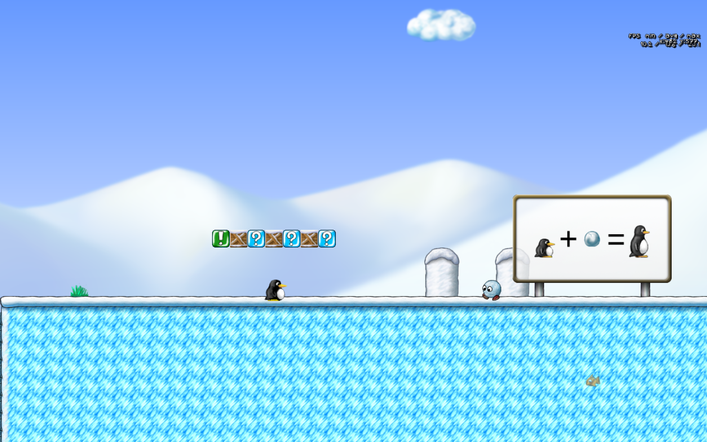
qa10-17-fullscreen-game/native-details/07-game-fullscreen-after-input.pngNative component — isolated container
24. Game pause menu
Escape opened the actual game pause menu. Only the disposable native game session was stopped.
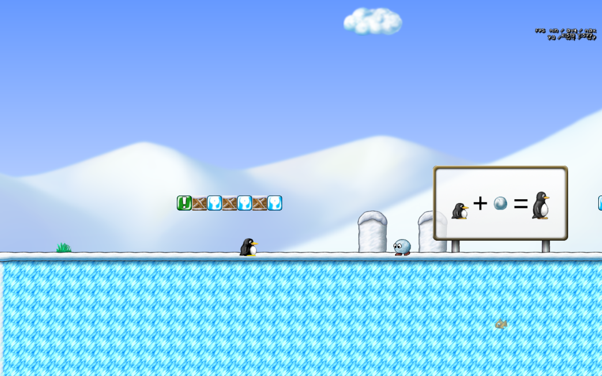
qa10-17-fullscreen-game/native-details/08-game-pause-menu.pngNative component — isolated container
25. Files and terminal together
Dolphin and Konsole arranged side by side. Minimize and restore also passed. Ordinary user UID 1500, not a privileged desktop session.
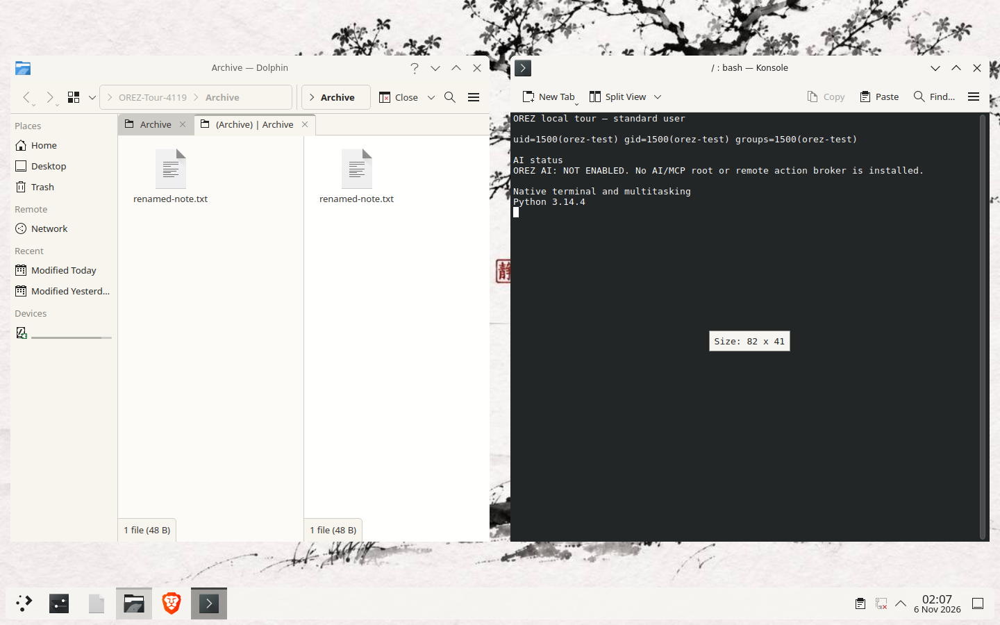
qa10-16-desktop/native-details/12-files-and-terminal.pngNative component — isolated container
26. A second workspace
KWin created a second workspace, switched to it, returned and removed the test workspace. The windows stayed on their original workspace.
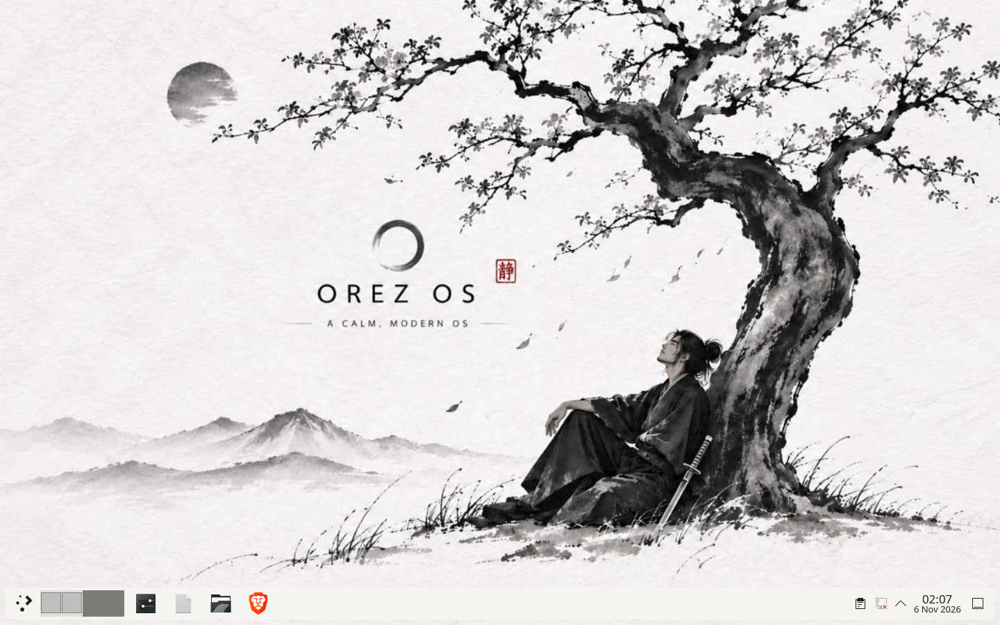
qa10-16-desktop/native-details/14-second-workspace.pngNative component — isolated container
27. Restart the panel, preserve the work
A controlled Plasma shell restart brought the panel back while the existing Dolphin/Konsole processes remained alive. This is not kernel-crash, power-loss or disk-recovery qualification.
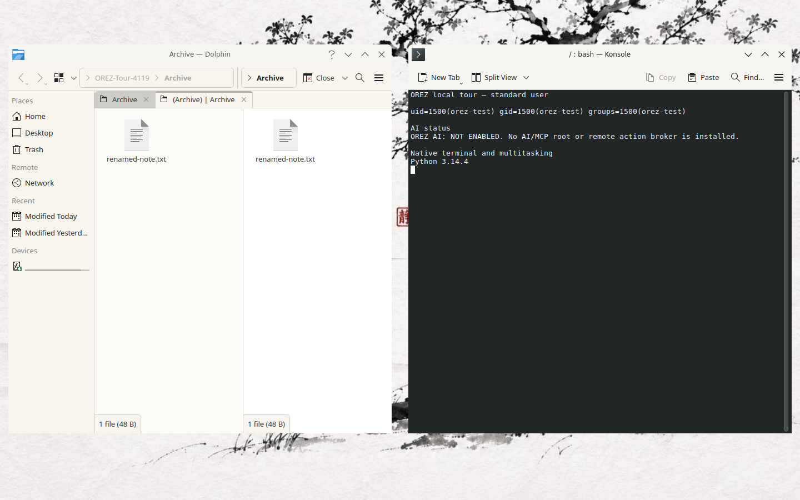
qa10-16-desktop/native-details/15-panel-restart-apps-preserved.pngTest report — not a browser window
28. Brave: honest environment limit
The official native Linux browser was attempted. Its sandbox could not create required nested namespaces. This report records BLOCKED, even though the vendor wrapper returned zero; no working browser or YouTube is claimed.
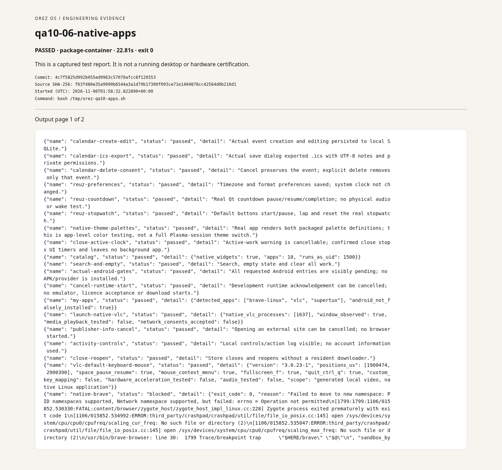
qa10-06-native-apps/report-001.pngNative component — isolated container
29. AI status is visible
orezctl ai explicitly reports NOT ENABLED. No AI/MCP root or remote action broker is installed. Future AI must use ordinary permissions and explicit owner approval.
qa10-16-desktop/native-details/12-files-and-terminal.pngNot yet available to show working
Completed installation/reboot, disk-encryption unlock, recovery/rollback, NVIDIA acceleration, real Wi-Fi/Bluetooth/USB transfers, scrcpy phone mirroring and OREZ AI. Their implementation or hardware qualification remains open. The native Brave sandbox is blocked by the test environment. YouTube is optional under the latest owner direction.
45 future ideas
Proposals, not implemented or tested features; related concepts may exist elsewhere. Boot, installation, updates and recovery take priority.
Original games — five ideas
Ink Courier
Deliver letters through brush-painted villages by drawing a limited supply of ink platforms.
Engineering: Small native Godot 2D game; keyboard/controller; offline.
Future acceptance: Finish ten levels with remappable controls and a 60-FPS target on qualified hardware.
Folded Worlds
Fold a paper map to connect paths, redirect light and reach hidden rooms.
Engineering: Native puzzle game with deterministic undo; no ads or purchases.
Future acceptance: Every puzzle has a reachable solution and undo restores the exact board.
Quiet Station
Repair a train station by arranging signals, power and passenger routes.
Engineering: Short pause-anytime logic sessions; optional local co-op later.
Future acceptance: Pause/save/reload preserves the complete simulation without losing progress.
Shadow Garden
Grow a moonlit garden by placing trees whose shadows form changing paths.
Engineering: Low-spec turn-based puzzle with an accessible high-contrast mode.
Future acceptance: All puzzles remain playable without colour discrimination or timed input.
Rewind Harbour
Route small boats through a harbour while rewinding selected objects instead of the entire world.
Engineering: A compact native puzzle prototype; bounded simulation history.
Future acceptance: Rewind cannot duplicate rewards or corrupt saved games.
OS features — five ideas
Project Rooms
Open a chosen set of files, apps and window positions as one named work context.
Engineering: Local workspace manifests; never store credentials or automatically execute imported scripts.
Future acceptance: Export/import a room; missing apps are explained and no command runs without permission.
Change Receipts
Show what every OREZ-managed update or settings action changed, why, and how to undo it.
Engineering: Start with OREZ operations; never claim to capture every arbitrary root command.
Future acceptance: Apply and undo a supported change; compare effective state and preserve the audit entry.
Resource Agreements
Give a foreground game, render or call a visible resource budget and postpone optional background jobs.
Engineering: Use supported Linux cgroups/PSI; owner can override; no magical CPU/GPU unlock.
Future acceptance: Measure frame times and responsiveness under enforced competing loads.
Offline Readiness
A clear checklist shows which apps, drivers, documentation and recovery tools really work without internet.
Engineering: Package/content inventory plus explicit offline tests.
Future acceptance: Disconnect networking and launch every item marked ready; stale claims must disappear.
Context Dock
Each Project Room can keep a small set of relevant files and safe actions in its own dock.
Engineering: Explicit local configuration; no covert usage tracking.
Future acceptance: Switch rooms repeatedly without launching hidden apps or leaking another room’s recent files.
Security features — five ideas
Access Receipts
Display the app, exact folder/device, purpose, duration and revocation control for permission grants.
Engineering: Narrow capability broker; OS authentication is separate from AI text.
Future acceptance: Wrong app, expired token and revoked token must all be rejected.
Canary Documents
Optional decoy documents detect suspicious mass rewriting near protected work.
Engineering: Evidence-based alert first; ignore known backup/indexing workflows; no automatic destructive response.
Future acceptance: Run benign indexers and controlled synthetic ransomware fixtures; measure both misses and false alarms.
Remote-Control Beacon
Show a persistent, owner-controlled indicator whenever an authorized remote-input session exists.
Engineering: Track known remote sessions and device arrivals, not private keystrokes; cannot prove human identity.
Future acceptance: Start/revoke a permitted session; injected USB input must not be mislabeled as proven owner activity.
Payment Workspace
Offer a separate, minimal browser profile for financial work with reduced extensions and sharing.
Engineering: Opt-in isolation, clear domain display and ordinary bank authentication; no guarantee against phishing.
Future acceptance: Verify profile/cookie separation, clipboard policy and permission revocation with dummy accounts.
Revocation-Safe Restore
Restore the system without silently resurrecting revoked devices, tokens or obsolete trust decisions.
Engineering: Separate revocation records from ordinary rollback; require owner-held recovery credentials.
Future acceptance: Revoke access, roll back, and prove the revoked principal still cannot connect.
Shortcut features — five ideas
Hold-to-Learn
Hold a configurable key to see the shortcuts available in the current app.
Engineering: Accessible overlay; query known app bindings; do not intercept passwords.
Future acceptance: Overlay is readable at 200% scale and never consumes a typing shortcut unintentionally.
Action Palette
Search settings, apps and safe operations with clear previews and required permissions.
Engineering: Local command registry; no arbitrary shell execution from guessed natural language.
Future acceptance: Ambiguous and privileged actions require explicit selection and normal authentication.
Return to Task
One configurable action returns to the previous Project Room and focused document.
Engineering: Window/app context only; recovery of unsaved documents depends on application support.
Future acceptance: Switch across three rooms; restore the correct window without exposing hidden work.
Peek and Place
Hold a shortcut, choose a workspace visually, and release to move the current window.
Engineering: Use compositor APIs and cancel safely with Escape.
Future acceptance: Move/cancel repeatedly across multiple displays without losing the window.
Private Paste Shelf
An opt-in temporary shelf holds selected clipboard items and clears them visibly.
Engineering: Never assume sensitive-content detection is perfect; exclude password managers where supported.
Future acceptance: Disable/clear removes stored items; clipboard synchronization remains separately consented.
Multitasking features — five ideas
Task Lanes
Group windows by activity and give each group its own notification policy.
Engineering: Reuse Plasma workspaces/activities with a coherent OREZ interface.
Future acceptance: Switch groups under load and prove notification exceptions still work.
Window Placeholders
After restart, show where previous windows belonged and let the owner reopen them.
Engineering: Do not claim to recover arbitrary app memory or unsaved content.
Future acceptance: Unavailable files/apps produce useful placeholders and never trigger silent downloads.
Drop-to-Action Tray
Drop selected files onto explicit local actions such as convert, compress or compare.
Engineering: Preview output and destination; preserve originals; external sending is always separate.
Future acceptance: Cancellation leaves originals intact; path traversal and command injection are refused.
Phone Handoff Parcel
Send a selected document or task note to the paired phone with a visible transfer receipt.
Engineering: Build on KDE Connect; selected data only, encrypted transport where supported.
Future acceptance: Pair, send, interrupt, retry and revoke against an actual Android device.
Attention Queue
Collect routine notifications while recording or gaming, then present a concise review.
Engineering: User-defined exceptions for calls and critical warnings; no invisible permanent suppression.
Future acceptance: A critical alert remains visible and queued notifications survive an app restart.
Crash resistance and recovery — five ideas
Graphics Safe Profile
Keep a tested conservative display/effects profile for recovery after graphics problems.
Engineering: Supported driver/compositor options only; no firmware or voltage bypass.
Future acceptance: Recover from a deliberately bad test profile on a VM and the actual GPU.
Checkpoint Before Change
Create an appropriate system checkpoint before supported driver or OS changes.
Engineering: Snapshots complement independent backups; account for app consistency and revocations.
Future acceptance: Interrupt an update, restore, and verify both boot and untouched user documents.
Restart Only What Failed
Offer to restart a hung app or desktop shell while keeping other applications running.
Engineering: Record diagnostics with consent; never promise recovery of all unsaved app state.
Future acceptance: Crash the selected component and prove unrelated processes/data remain intact.
Trial Boot Updates
Boot a staged update once and retain a known-good recovery choice until health checks pass.
Engineering: Design against rollback to vulnerable versions and protect trust/revocation state.
Future acceptance: Failed boot returns to the approved recovery path without deleting user files.
Memory Pressure Assistant
Explain memory pressure and offer to pause selected background work before a severe stall.
Engineering: Use actual pressure metrics and bounded zram/swap policies; no cache-clearing gimmicks.
Future acceptance: Test enforced 6/16-GiB workloads, missed warnings and false interventions.
Computer wellbeing — five ideas
Thermal Context
Explain sustained temperature, fan and throttling patterns in plain language.
Engineering: Read hwmon/NVML when available; offer maintenance advice rather than unsafe tuning.
Future acceptance: Compare displayed values with trusted tools and handle missing sensors honestly.
Storage Care
Track NVMe health, free-space pressure and supported maintenance schedules.
Engineering: No automatic formatting, destructive tests or unsupported repair operations.
Future acceptance: Recognize simulated warning logs; verify read-only polling and safe cancellation.
Power With Evidence
Compare quiet, balanced and performance profiles using measured workload results.
Engineering: Owner chooses the trade-off; avoid universal better-performance/lower-power promises.
Future acceptance: Repeat the same benchmark and record power, temperature and completion time.
Backup Rehearsal
Periodically restore a chosen sample into an isolated folder to check backup usability.
Engineering: Explicit opt-in, encrypted backups where configured, and no original-file overwrite.
Future acceptance: Detect a damaged backup and recover the sample with an owner-held key.
Restful Desktop
Schedule quiet periods and sleep around the owner’s actual work rather than a fixed idle timer alone.
Engineering: Respect renders, recordings and active sessions; explain every inhibited sleep request.
Future acceptance: Verify sleep/wake and display reconnection while preserving active work.
UI design — five ideas
Readable Paper Glass
Use restrained translucent panels with an opaque fallback when contrast or GPU resources require it.
Engineering: Accessible colours, cached effects and a visible effects switch.
Future acceptance: Check contrast on both supplied wallpapers and under software rendering.
Meaningful Motion
Animate where a window or task went, using short transitions that can be disabled.
Engineering: Respect reduced-motion preferences everywhere.
Future acceptance: No task requires animation to understand its state; measure input latency.
Truthful Status
Show effective configuration and distinguish ready, unavailable, pending and failed features.
Engineering: No fake connected devices, working AI badges or implied successful installs.
Future acceptance: Disconnect services/devices and compare the UI with actual backend state.
One Search, Clear Scope
Search apps and settings together, with optional file indexing under explicit exclusions.
Engineering: Local-first indexing; expose included locations and deletion controls.
Future acceptance: Excluded/private locations never appear and changed settings are discoverable.
Keyboard and Pointer Equality
Make every important action usable with visible focus, mouse, keyboard and assistive tools.
Engineering: Avoid tiny controls, hidden hover-only actions and icon-only consent.
Future acceptance: Complete the main journeys without a mouse and at enlarged text scale.
Additional theme directions — five ideas
Silver Mist
Cool grayscale paper, light glass and subtle silver focus outlines.
Engineering: Keep the approved tree imagery and minimal palette.
Future acceptance: Contrast and focus indicators pass on light and detailed wallpaper regions.
Moonlit Ink
Charcoal surfaces with pale brush details and quiet, warm-white text.
Engineering: A proposed refinement beyond the current basic OREZ Ink palette.
Future acceptance: Unchecked controls, disabled states and text remain distinguishable.
Snow Field
Nearly white surfaces, generous spacing and a small ink-red accent.
Engineering: Red is optional and never the sole meaning of a status.
Future acceptance: All status meanings remain clear in grayscale and colour-vision simulations.
Archive Paper
Warm handmade-paper tones with compact typography for long reading and coding.
Engineering: Font choice and density remain user-controlled.
Future acceptance: Review long documents, code and file lists at common display scales.
Focus Contrast
Opaque black/white surfaces, strong borders and reduced animation.
Engineering: Accessibility/performance profile with the same features as decorative themes.
Future acceptance: Every permission, error and focus state remains visible with effects disabled.
Open all 245 original PNGs and test results.